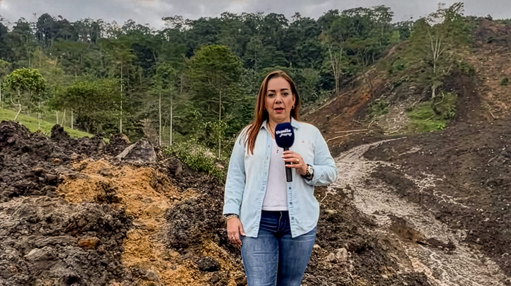
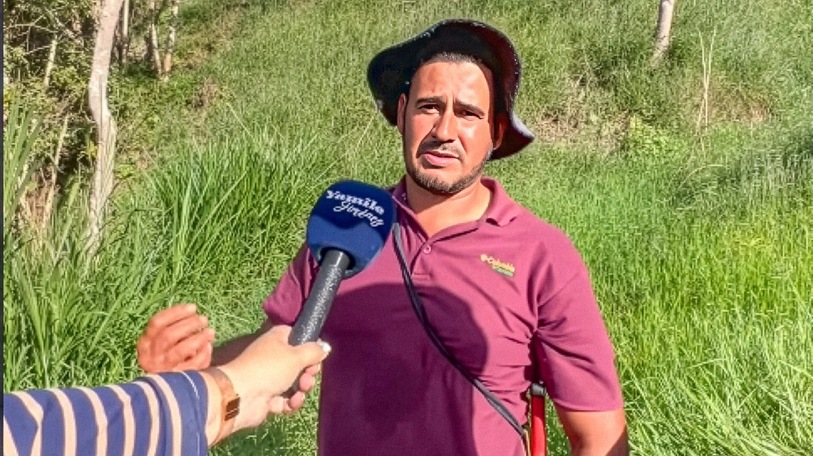
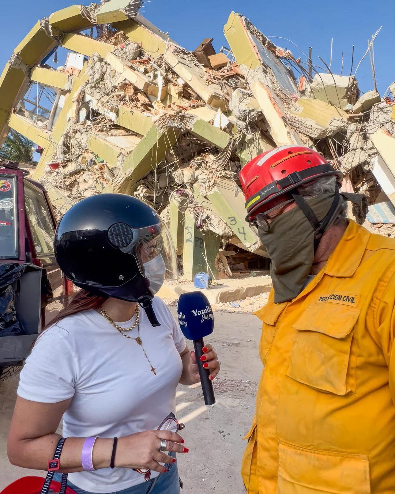
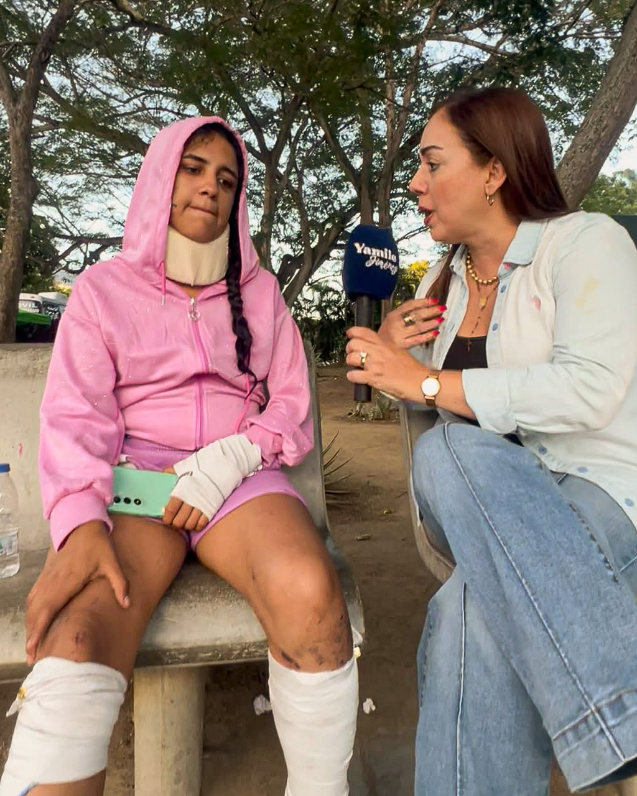
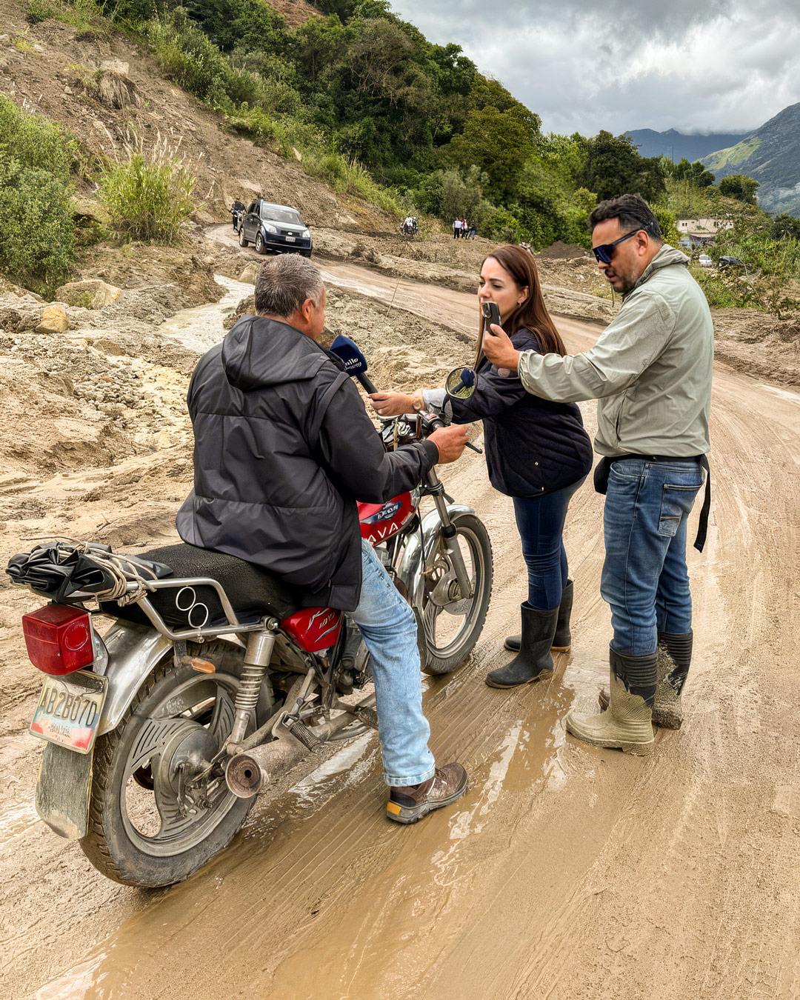
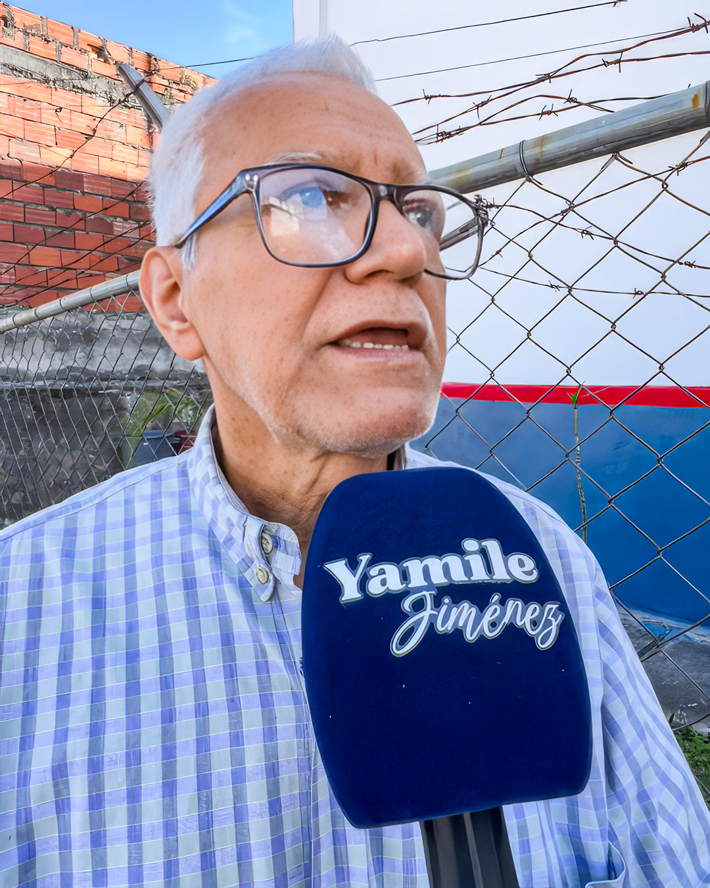

Historias — Táchira
Dos veces la misma herida
Primero como corresponsal en Táchira de RCTV, y después como parte del equipo periodístico de Éxtasis 97.7 FM, Yamile Jiménez vivió puertas adentro el cierre de los medios en Venezuela. Con dudas y animada por un amigo, volvió a la reportería de calle, para encontrarse con una comunidad ávida de espacios para contar sus problemas.

A veces me pasa que, cuando llego a alguna comunidad, lista para reportear, muchos vecinos me miran con sorpresa al darse cuenta de que no llevo un micrófono con el logo de ningún canal.
—¿Quién es usted? ¿De qué medio viene? —me preguntan.
—Soy Yamile Jiménez, trabajo de manera independiente —les digo—. Publico las noticias en mis redes.
Es la explicación que me ha tocado dar muchas veces, desde que empecé a salir a la calle a documentar historias, porque después de casi tres décadas entre calles y cabinas de radio, a mis 53 años, no tuve otra opción que adaptarme a mi propio espacio para seguir haciendo periodismo.
Comencé a estudiar comunicación social en la Universidad de Los Andes en 1991, después de hacer un curso de locución que terminó de convencerme de que quería dedicarme al periodismo. Hasta entonces, también había pensado en estudiar medicina, pero luego de aquella experiencia, esa posibilidad quedó definitivamente descartada.
Cinco años más tarde, a mis 21 años, me gradué como comunicadora social.
Siempre soñé con trabajar en Radio Caracas Televisión (RCTV). Mientras estudiaba, veía sus programas, sobre todo El Observador, el noticiario de ese canal. La oportunidad de ser parte de ese equipo me llegó en 1998, cuando tenía 23 años y RCTV estaba buscando un corresponsal en Táchira. Participamos varios periodistas en el casting. Después, me llamaron para hacer una prueba de tres meses y, al terminar ese período, quedé fija como corresponsal. Aprendí que el periodismo debía asumirse como un servicio, con vocación, entrega y responsabilidad.
Hasta que vino esa tragedia que nos dejó una herida indeleble: el 27 de mayo de 2007, a la medianoche, RCTV salió del aire. Meses antes, el 28 de diciembre de 2006, el entonces presidente Hugo Chávez había anunciado que el Estado no renovaría el permiso que permitía al canal transmitir por señal abierta. Dijo que no toleraría periódicos o cadenas de radio y televisión estuviesen “al servicio del golpismo y contra el pueblo”.
Si bien el canal continuó un par de años más por televisión paga, nada volvió a ser igual. Para mí, la pérdida comenzó esa madrugada en que dejó de transmitir por señal abierta. El cierre había marcado un quiebre para la libertad de expresión y, especialmente, para quienes ejercíamos el periodismo. Yo continué como corresponsal, pero en 2011, cuando el canal no pudo sostenerse ni sostener a sus trabajadores, nos liquidaron a todos.
Así me despedí del trabajo al que había dedicado casi 12 años de mi vida.

¿Qué iba a hacer? ¿Dónde iba a trabajar? Me costó mucho asimilarlo. No dejaba de pensar en que no era lo mismo decidir irme porque tenía otra oportunidad, que tener que salir porque me habían quitado ese espacio.
Sentía que me habían arrancado una parte de mí.
Además, mi situación económica se trastocó. En RCTV ganaba un buen sueldo, formación, seguro y otros beneficios, además de un ambiente de trabajo en el que todos nos sentíamos como una familia. Hasta ese momento, la televisión había sido mi centro y, sin ella, tuve que reorganizar mi manera de trabajar y encontrar cómo seguir.

En Éxtasis 97.7 FM, la emisora de San Cristóbal donde había hecho mis pasantías en 1996, ya tenía una presencia secundaria: enviaba algunos reportajes de vez en cuando mientras trabajaba como corresponsal de RCTV. Pero ya sin la televisión, me dediqué por entero a la radio.
Éxtasis se convirtió en mi casa principal y allí completé 25 años de carrera. Al mismo tiempo asumí asesorías y comencé a trabajar como corresponsal para otros medios que fueron naciendo al tiempo que otros —sobre todo los tradicionales— se veían obligados a cerrar. También asumía proyectos eventuales, contratos que duraban unos meses y después terminaban. Nada fijo.
En 2021, 14 años después del cierre de RCTV, me tocó revivir una herida: apagar los micrófonos y salir de un medio que se quedaba sin señal. Esta vez le tocó a Éxtasis 97.7 FM.
Días antes de que saliera del aire, en mi programa A las 12 con Yamile, había entrevistado a la líder opositora Delsa Solórzano y a una diputada, también de la oposición. Durante el programa, ambas calificaron al gobierno de Nicolás Maduro de dictadura.
Poco después, la emisora dejó de transmitir.
La explicación oficial —y la que nos dieron a todos los trabajadores— estuvo relacionada con unos trámites administrativos. Pero la emisora cumplía con sus obligaciones y no tenía problemas pendientes.
Volver a perder un medio de trabajo volvió a ponerme frente a la incertidumbre. Y esta vez había algo más: desaparecía otro espacio al que las comunidades de Táchira acudían para contar lo que les ocurría y denunciar sus problemas. Para entonces, varias emisoras ya habían cerrado, entre ellas Impacto 105.3 FM, Somos Radio 88.3 FM y Café 90.7 FM.

Como no quería que el cierre de la emisora significara dejar de hacer periodismo y, sobre todo, porque tampoco podía darme el lujo de quedarme sin ese ingreso, decidí intentar volver a la radio. Llegué a conversar con los dueños de otras emisoras. En una de esas conversaciones, uno de ellos fue claro:
—Puedes trabajar con nosotros, pero aquí no podemos tocar temas políticos ni hacer críticas al gobierno.
Era una respuesta que se repetía cada vez que intentaba encontrar un espacio para trabajar. La verdad es que, después de tantos años haciendo periodismo, no quería aceptar condiciones que limitaran los temas que podía abordar.
Por eso, durante los tres años siguientes, me mantuve trabajando en distintos espacios. Continué con Monitor de Víctimas y Caraota Digital, y me sumé al Observatorio Venezolano de Fake News y Medianálisis. Me hice especialista en verificación de datos y trabajaba en proyectos sobre derechos humanos. Así conseguía ingresos para vivir, pero, aunque disfrutaba de la investigación, no abandonaba la idea de algún día volver a lo mío, a lo que me apasionaba: el periodismo de calle.
En 2024, durante una misa en la iglesia Santa Rosa de San Cristóbal, me encontré con Ronald Zerpa. Nos conocíamos desde hacía años por su trabajo como director de Protección Civil en el estado, y habíamos construido una buena amistad. Nos pusimos al día. Le hablé de lo difícil que era ejercer sin un medio y él me planteó una alternativa para volver a la calle tras tanto tiempo fuera de las pantallas y los micrófonos.
—Tú tienes una carrera, tienes una trayectoria conocida —insistía él—. ¿Por qué no haces tu propio proyecto en redes?
—¿Tú crees? —le pregunté, todavía con dudas.

—Claro que sí. Y si quieres, yo te apoyo con lo que necesites para arrancar.
La idea empezó a rondarme. Extrañaba la calle, salir a buscar las historias y estar cerca de las personas. Ya no tenía un medio desde el cual hacerlo, pero tampoco quería seguir esperando a que apareciera uno. No había presupuesto ni patrocinantes, y yo venía con la dinámica y el ritmo del periodismo de la vieja escuela. Aun así, decidí empezar con lo que tenía: mi celular y mis ganas de seguir comunicando.
En abril de ese año comenzamos el proyecto. Ronald se convirtió en mi productor y se encargó de apoyarme con las grabaciones y la edición de los videos.
Los primeros videos los grabamos dentro de mi carro, al que comencé a llamar “mi cabina”. Allí empecé a producir y publicar reportajes en Facebook, X, Instagram y TikTok bajo el nombre de @yamilejimenezu. Comencé con dos videos semanales sobre sucesos nacionales e internacionales, denuncias, noticias y temas políticos.
Con cada publicación, más personas me escribían. Me contaban lo que ocurría en sus sectores, me pedían que fuera y que ayudara a visibilizar sus problemas. El proyecto empezó a crecer a partir de esas denuncias. Así, con el tiempo, @yamilejimenezu dejó de ser solo una cuenta donde publicaba mis reportajes. Se convirtió en un espacio al que la gente acudía para contarme lo que le estaba pasando.
La comunidad creció rápido: pasé de 12 mil seguidores a más de 100 mil. Los reportajes se viralizaban cada vez más y otros colegas, como Sergio Novelli, empezaron a compartir mi trabajo y a buscarme para colaborar conmigo. Entonces entendí que aquello que estaba construyendo no solo tenía valor para mí, también empezaba a ser reconocido por otros.
Luego vinieron los reportajes sobre el abandono del Táchira: el deterioro de las vías, la falta de insumos en los hospitales y las obras inconclusas. En enero de 2026, tras las primeras excarcelaciones de presos políticos, comenzaron a buscarme familias que habían guardado silencio por miedo. Me sentaba en sus salas a escuchar y documentar el horror del encierro, las torturas y las secuelas en cada hogar. Varias de esas denuncias se viralizaron; entre ellas, la de un hombre detenido por error cuyo hijo autista, desbordado por la situación, intentó suicidarse.
Al poco tiempo, los testimonios comenzaron a llegar también desde Mérida y Barinas.
—¿Tienes un espacio donde podamos quedarnos un par de días? —le pregunté a un amigo en Mérida antes de salir.
—Sí, vénganse, aquí nos acomodamos.
Con eso bastaba.

Ronald y yo armábamos los bolsos, conseguíamos los pasajes y arrancábamos; así, sin viáticos ni grandes equipos. Lo importante era llegar hasta esas familias y contar lo que estaba ocurriendo.
Así las historias nos llevaron fuera del Táchira.
El 27 de junio llegamos a La Guaira para cubrir de cerca los daños que habían dejado los terremotos del 24 de junio. Para hacer ese viaje también dependimos de la solidaridad: Expresos Los Llanos nos dio los pasajes de cortesía y nos hospedamos en casas de amigos. Así hemos ido resolviendo cada cobertura, con los recursos que aparecen en el camino.
Pero una cosa es encontrar la manera de sacar adelante el trabajo y otra poder vivir de él. Hasta ahora, ese esfuerzo no ha sido suficiente para convertir el proyecto en un sustento estable. Todavía no he podido monetizar las plataformas, así que he pensado en buscar patrocinadores o personas que quieran apoyar el periodismo independiente; como Melanio Escobar, quien hace poco, junto a la organización Redes Ayuda, me regaló una antena Starlink para superar los problemas de conectividad.
Mientras tanto, sigo viviendo de mis trabajos de investigación y “matando tigritos”, como quien dice. Con eso mantengo a mi hija, de 18 años, y a mis padres, de 83 y 85. Esa sigue siendo una parte de la realidad del periodismo en Venezuela. Y si bien hoy me toca ejercerlo de otra forma, el oficio sigue siendo el mismo: salir a buscar una historia, comprobar lo que está pasando y contarlo. La diferencia es que ahora puedo hacerlo sin tener que preguntarme antes qué puedo decir y qué debo callar.